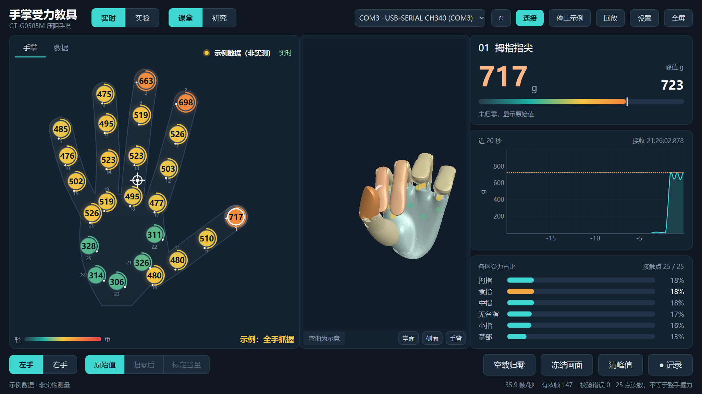
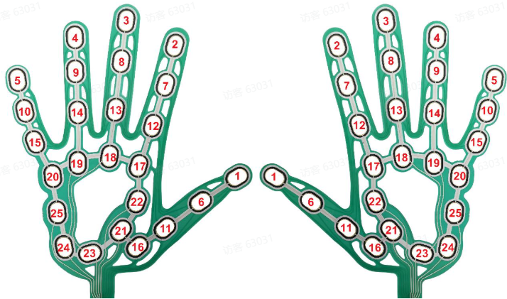
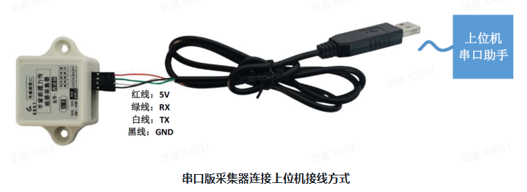
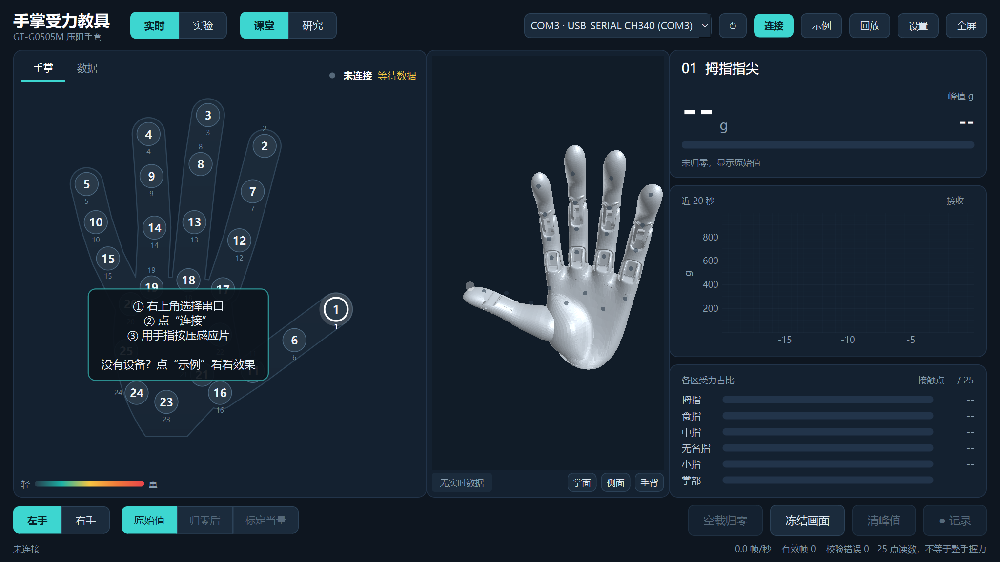
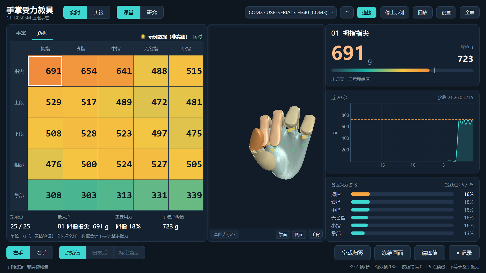
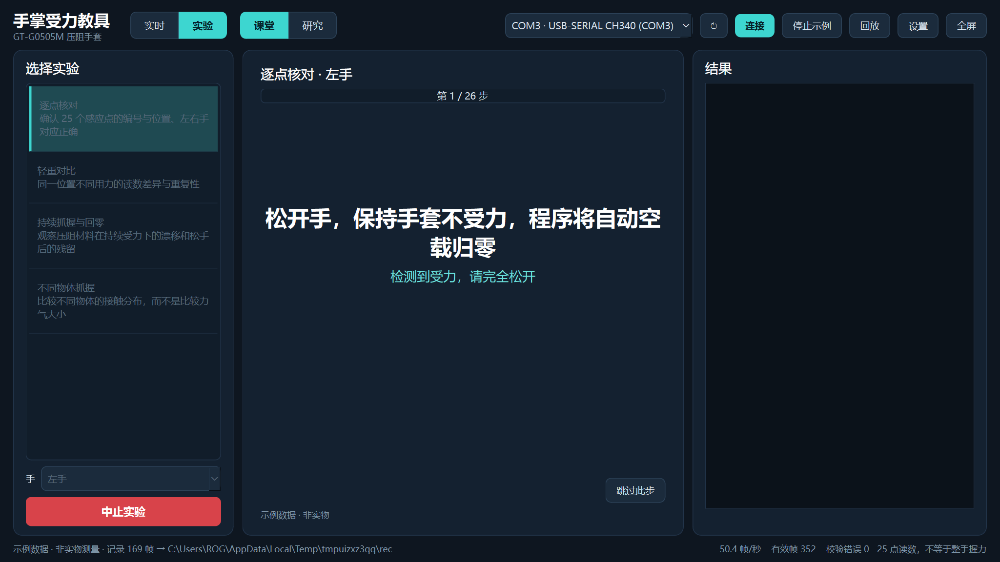
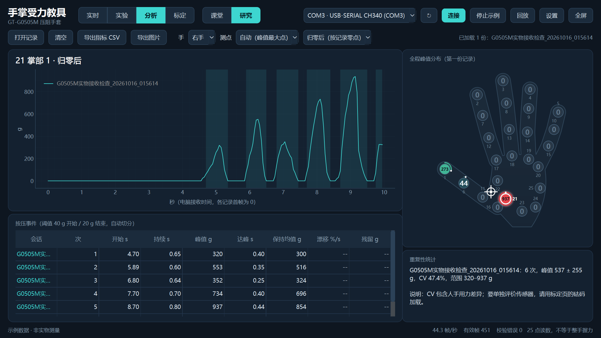
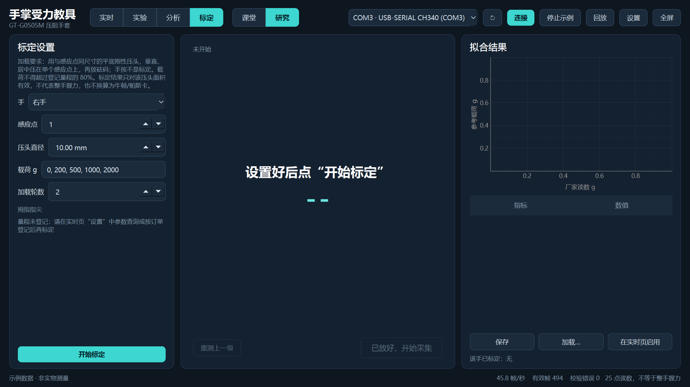

本说明书中的界面截图除“分析页”外均为软件内置示例数据（界面标注“示例数据 · 非实物”）；分析页使用 2026-10-16 实物记录。
本教具把 GT-G0505M 手掌受力手套上 25 个感应点的读数实时画在电脑上：哪个位置受力、受力多大、随时间怎么变化，一眼就能看到。适合课堂上观察抓握时力量分布在哪里、轻重变化以及持续用力的过程。
| 部件 | 作用 |
|---|---|
| 压阻感应手套（25 点） | 五指各 4 点（指尖、上段、下段、根部）+ 掌部 5 点 |
| 转接板 + 10Pin 反向 FPC 排线 | 把感应片信号接到采集器；必须是反向排线 |
| G0505M 采集器（串口版） | 把 25 点换算为厂家估算值 g，每 50 ms 上报一帧 |
| USB-TTL 转换器（CH340） | 采集器与电脑之间的串口桥，电脑上显示为 COM 口 |
| 教具软件（本说明书） | 显示、记录、回放、引导实验、分析和标定 |

软件中的编号与厂家完全一致。右手画面是左手的水平镜像，通道编号不变。
每一列是同一根手指：1/6/11/16 拇指，2/7/12/17 食指，3/8/13/18 中指，4/9/14/19 无名指，5/10/15/20 小指。

_internal 文件夹），双击 启动G0505M教具.cmd。无需安装 Python。
| 区域 | 怎么看 |
|---|---|
| 手掌图（左） | 每个圆点就是一个感应点。颜色 由暗到红表示越来越大；圆点外圈的弧长 = 当前值占“色标上限”的比例，白点 = 峰值；新按下的点会冒出一圈扩散波纹。 |
| 受力中心 ⊕ | 25 个点按读数加权算出的位置，拖尾显示最近 1.6 秒的移动。只反映采样点分布，不是整手合力的作用点。 |
| 三维手（中） | 强脑 Revo2 灵巧手模型，零件按受力着色，可拖动旋转，下方切换掌面/侧面/手背。手指弯曲由受力推算，仅示意，软件不控制真实机械手。电脑不支持 OpenGL 时自动改为二维示意。 |
| 选中点（右上） | 在手掌上点一个圆点（或按 ← →），显示它的当前值、峰值和量条。 |
| 近 20 秒曲线 | 选中点的变化过程，橙色虚线是峰值。 |
| 各区受力占比 | 五指和掌部各占多少，最大的一项高亮为橙色。只比较分布，不代表力气大小。 |
| 底部状态栏 | 帧率、有效帧、校验错误。正常时约 20 帧/秒、校验错误为 0。 |

把 25 个数值按“手指列 × 指段行 + 掌部行”排成表格，按同一色标着色；底部显示接触点数、最大点、主要用力区域和所选点峰值。适合让学生抄数据、做对比。
| 按钮 | 快捷键 | 作用与注意 |
|---|---|---|
| 空载归零 | Z | 先完全松手，再点它：把当前读数设为零点，重新开始曲线和峰值。之后可选“归零后”显示；归零后的数值可能为负，用来观察零点漂移。抓握过程中不要归零。 |
| 冻结画面 | 空格 | 定格画面方便讲解；采集和记录不会停。再按一次恢复最新值。 |
| 清峰值 | P | 以当前值为起点重新统计峰值，只影响当前这只手。 |
| ● 记录 | — | 选择保存位置后开始记录，按钮变红并计时；再点停止。关闭程序也会自动保存。 |
| 回放 | — | 打开以前记录的 channels.csv，可播放/暂停、0.5/1/2 倍速、拖动进度。 |
| 原始值 / 归零后 / 标定当量 | — | 切换显示方式；记录文件始终保存厂家原始值。“标定当量”需要先在标定页完成标定。 |
| 课堂 / 研究 | — | 课堂模式只显示“实时、实验”两页，按钮少；研究模式增加“分析、标定”。 |
| 设置 | — | 量程登记（2/5/10 kg/点）、色标上限、只读参数查询。色标上限只改颜色，不改数值。 |
| 全屏 | F11 | 投影时使用，Esc 退出。 |
| 文件 | 内容 |
|---|---|
channels.csv | 电脑接收时间、左右手、25 路原始 g 和零点，可用 Excel 打开 |
session.json | 数据来源、量程、归零等操作事件；回放时用来恢复设置 |
valid_frames.bin / received_bytes.bin | 原始串口数据，供复查 |

文档\G0505M实验数据\日期_实验名\，附 experiment.json。| 实验 | 目的 | 观察要点 |
|---|---|---|
| 逐点核对 | 确认 25 个点的编号、位置和左右手对应 | 按到哪一点，画面上就是那一点；按错点会提示 |
| 轻重对比 | 同一位置轻按与重按的差异和重复性 | 峰值随用力变化；多次重复的分散程度 |
| 持续抓握与回零 | 观察压阻材料在持续受力下的漂移和松手后的残留 | 保持阶段读数是否慢慢变化；松手后是否回到 0 |
| 不同物体抓握 | 比较不同物体的接触分布 | 比较“哪里受力”，而不是比较力气大小 |
点顶部 研究 后出现“分析”“标定”两页。

点 打开记录 选择一份或多份 channels.csv 叠加比较。按“40 g 开始 / 20 g 结束”自动切分每次按压，列出峰值、达峰时间、保持均值、漂移率和松手残留，并计算重复性 CV。可 导出指标 CSV 和 导出图片。保持不足 0.5 秒时不评价漂移，相邻按压间隔太短时不评价残留（显示 --）。

| 现象 | 可能原因 | 处理 |
|---|---|---|
| 下拉框显示“未发现串口” | USB 未插好；CH340 驱动未装 | 换 USB 口后点 ↻；在设备管理器查看；安装转换器驱动（便携包不自动装驱动） |
| 已连接，但一直“等待该手有效帧”，接收字节为 0 | TX/RX 没有交叉；GND 未共地；采集器未供电 | 断电重新核对第 2 章接线。字节为 0 表示数据没到电脑，不代表受力为 0 |
| 只有另一只手有数据 | 采集器设为右手（或左手） | 点左下角切换左手/右手；这不是故障 |
| 有数据、帧率正常，但 25 点一直是 0 | 没按在感应点上；FPC 排线方向反了或不是反向排线；排线未插到底、锁扣未扣 | 先按住圆形感应区 2 秒；仍为 0 则断电，按连接器金属触点核对排线方向、插深和锁扣。软件 8 秒后会自动提示这一项 |
| 显示“数据过期 · 保留最后值” | 超过 1 秒没有新数据：USB 松动、线缆干扰 | 检查 USB 线；拔插后重新点“连接” |
| 校验错误持续增加 | 波特率不对、线缆过长或干扰 | 确认 115200 8N1；缩短 TTL 连线 |
| 松手后读数不回 0 | 压阻材料的迟滞与残留，属正常现象 | 等待几秒或点“空载归零”；这正是“持续抓握与回零”实验要观察的内容 |
| 三维手不显示 | 电脑不支持 OpenGL（如远程桌面、老显卡） | 软件会自动改用二维示意，其他功能不受影响 |
| 双击后没有窗口 | 没有完整解压，或缺少 _internal | 把整个压缩包解压到本地磁盘后再运行 |
排查时请勿点击厂家软件中的“零点标定”“清除零点”“设置量程”等会写入设备的按钮；本教具只发送只读查询 SET=?，不会修改采集器设置。
| 项目 | 数值 |
|---|---|
| 感应点 | 25 点压阻阵列（五指各 4 点 + 掌部 5 点） |
| 量程 | 2 / 5 / 10 kg 每点三种版本（本机实测查询为 5 kg/点） |
| 输出 | 厂家估算值，单位 g，0–65535 |
| 上报周期 | 最快 20 ms/帧；本机设为 50 ms（约 20 帧/秒） |
| 串口 | 115200 bps，8N1；53 字节帧，0x40 帧头，0x31/0x32 左右手，25 个大端 uint16，和校验 |
| 厂家标称 | 重复性 ±8%，迟滞 < 6%，漂移 < 8%（不是全条件准确度承诺） |
| 软件运行环境 | Windows 10 1809 及以上 / Windows 11，64 位；免安装 |
| 文件 | 说明 |
|---|---|
启动G0505M教具.cmd / G0505MTeaching.exe | 启动程序（两者等效） |
_internal\ | 运行库，不能删除 |
G0505M手掌受力教具使用说明书-v2.0.pdf | 本说明书 |
G0505M桌角卡-v2.0.pdf | A4 一页 8 张的快速上手卡，裁切后放在每张桌角 |
接线与编号图\ | 厂家接线图与编号图 |
使用说明.md、验证结果.md、*.json | 详细文字说明与软件、实物检查记录 |
G0505M教具源码-v2.0.0.zip | 源码包 |
厂家资料：https://hcn2yloo448w.feishu.cn/wiki/EsALwFJ3timvKGkic4ZcXth9nvg 。编号图与接线图为厂家公开文档截图，版权归原作者，仅用于配套教学核对。三维手模型来自 BrainCo Revo2（Apache-2.0），来源见 _internal\grip_teaching\assets\revo2\NOTICE.md。